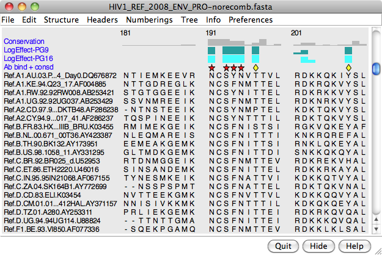
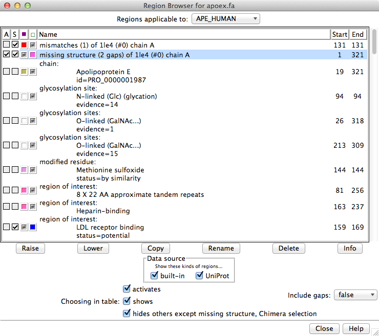
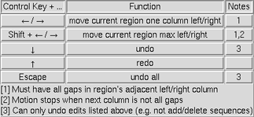

|
|
Multalign Viewer shows amino acid and nucleotide sequences:
See also: Chimera tutorials (in particular, Sequences and Structures, Superpositions and Alignments, Comparative Modeling, and on the Chimera website, Mapping Sequence Conservation) and the following reference:
Tools for integrated sequence-structure analysis with UCSF Chimera. Meng EC, Pettersen EF, Couch GS, Huang CC, Ferrin TE. BMC Bioinformatics. 2006 Jul 12;7:339.
There are several ways to start Multalign Viewer, a tool in the Sequence category. Explicitly starting Multalign Viewer brings up a dialog for opening a sequence alignment. In fact, simply opening a file in any of the registered sequence alignment formats (without starting Multalign Viewer first) will automatically use it to show the alignment. Several alignments can be open at the same time, each in a separate sequence window.
Individual sequences of structures in Chimera can be shown:

|
The figure shows part of the sequence window contents for the input file apoex.fa. In addition to the sequences and their names, numbering and header lines may be displayed. Font size, sequence wrapping behavior, and the coloring of residue one-letter codes can be controlled in the Appearance preferences. Colored boxes enclosing one or more residues are called alignment regions; double-clicking a region opens the Region Browser. The Edit menu allows searching for a string or pattern of residues in the sequences, or by full or partial sequence name.
When the mouse focus is in the sequence window, the Page Down key (or space) moves the view down to start with the block below the topmost block whose beginning is currently visible; Page Up (or Shift-space) moves the view up to start with the block above the topmost block whose beginning is currently visible. Vertical alignment scrolling can also be done with the mouse wheel.
Mousing over sequence names and residues shows information near the bottom of the window. Mousing over a sequence name reports any associated structure(s), the vertical position in the alignment (sequence is Nth of M sequences), and sequence length. Mousing over a residue symbol reports the corresponding residue in associated structure(s), if any, otherwise the sequence position. Reporting the position in non-structure-associated sequences is turned off for larger alignments (>250,000 characters). The system “copy” shortcut (for example, command-C on Mac) will copy the contents of the active region, if any, otherwise the entire sequence(s), into the text buffer.
The Hide button closes the sequence window without changing the state of Multalign Viewer. The sequence window can be reinvoked using the Raise option for the Multalign Viewer instance in the Tools menu (abbreviated MAV). This is also useful when the window has become obscured by other windows. Help opens this manual page in a browser window, and Quit exits from Multalign Viewer.
Initial sequence names are taken from the input file or based on the corresponding structure chain. A sequence name can be changed by choosing Edit... Edit Sequence Name from the Multalign Viewer menu, and in the resulting dialog, indicating the desired sequence and entering a new name. Double-clicking a name in the sequence window brings up the same dialog, already set to that sequence. Edit... Find Sequence Name allows searching by full or partial sequence name. In the sequence window, ellipses (...) are used to shorten names longer than the maximum (default 30 characters) specified in the Appearance section of the Multalign Viewer preferences.
Numbering can be displayed over the alignment and to the left and/or right of the sequences. Numbering displays can be controlled with the Numberings menu.
Alignment numbering (for the alignment as a whole) includes gap positions and always starts at 1. Whether it should be shown initially can be set in the the Headers preferences. When present, alignment numbering is shown above any headers.
Sequence numbering (for individual sequences) includes only non-gap positions and can start with numbers other than 1. Sequence start numbers are set to 1 when an alignment is opened, except:
|  |
Headers are lines of information above the sequences in the sequence window. They can be hidden/shown with the checkboxes in the Multalign Viewer Headers menu. Some headers are available automatically, and custom headers can be defined using a simple format. The Headers preferences control how Consensus and Conservation header values are calculated.
A header may contain numerical quantities (shown as a histogram), characters, or symbols. If the values in a numeric header fall within the range of 0 to 1, they will be used directly as histogram bar heights. If the range extends below 0 or above 1, the values will be converted into histogram bar heights ranging from 0 to 1 according to:
for values ≥ 0, 1 – ½(e– value)
for values < 0, ½(evalue)However, the original values (not those used for histogram display) are assigned as residue attributes and written out when header contents are saved.
Headers may be dynamic, with values that update automatically when independent variables such as the sequence alignment or structure associations are changed, or static, with values that stay the same.
The following dynamic headers are available by default:
Alignment regions are colored boxes or outlines that enclose one or more residue symbols in the sequence window. A single region can contain any number of disjoint and/or abutting rectangular blocks. Pausing the cursor over a region (but not directly over a residue symbol) shows the region name in a pop-up balloon (see the Regions preferences), and double-clicking a region opens the Region Browser.
Several actions in Multalign Viewer and other tools generate regions, and they can also be created manually. UniProt sequence feature annotations are loaded automatically as regions for sequences fetched from UniProt, and annotations from UniProt can be added to other sequences (those already open in Chimera) using Info... UniProt Annotations.
The initial display of manually created regions and those created by selection or structure association can be set in the Regions preferences. The display and colors of existing regions can be controlled with the Region Browser. Be aware that reordering the sequences will delete existing multisequence regions.
A region can be created manually by dragging with the left mouse button within the sequence window. Dragging downward into the following block highlights to the end of the preceding block. Shift-dragging with the left mouse button adds to the active region. Ctrl-dragging creates a new region and makes it the active region.
The active region is the region most recently created manually, clicked on in the sequence window, or designated as Active in the Region Browser. The corresponding parts of any associated structures are highlighted in the main Chimera window by becoming selected. Only one region can be active at a time. In the sequence window, the active region is indicated with a dashed outline; clicking the active region deactivates it, and clicking a different region deactivates the former active region and makes the new region active. A region with no interior color is only responsive to clicks on its borders. Where regions overlap, only the highest is responsive to clicks.
The Region Browser can be opened by double-clicking a region in the sequence window or by choosing Info... Region Browser from the Multalign Viewer menu.
|  |
Regions applicable to the entire alignment or to any of the individual sequences in the alignment can be listed using the pulldown menu near the top of the dialog. Regions applicable to the entire alignment include the Chimera selection and any hand-drawn regions, even if they only enclose parts of a single sequence. Regions applicable to an individual sequence include UniProt annotations and regions created by structure association. If UniProt annotations have been added, checkboxes under Data source allow including/excluding specific sets of regions from the listing.
Region Browser columns:
If Include gaps is false, the chosen region(s) will be drawn to enclose only residues, not gap positions. Although a given region may then appear as disjoint blocks, it will still be a single region.
Since regions may overlap, a region can be considered higher or lower than another. When the mouse focus is in the sequence window, the up arrow and down arrow keys can be used to raise and lower the active region, respectively, and pressing the Delete key will delete the active region. Alternatively, Region Browser buttons can be used to act on the chosen region(s):
A Newick-format tree corresponding to the alignment can be read and displayed to the left of the sequences with Tree... Load in the Multalign Viewer menu. A newly loaded tree will replace any previously shown tree. The tree can be hidden/shown with Tree... Show Tree.
The sequence names in the tree must be the same as the sequence names in the alignment, and neither set of names can be a subset of the other. If the order of sequences in the tree differs from that in the alignment, a dialog will appear, requesting permission to reorder the alignment sequences for clearer display (to avoid tree branch crossings). Reordering will delete multisequence regions, although the Chimera selection region (if any) will subsequently reappear.
When the tree includes branch lengths, both solid and dotted lines are used for display, with horizontal solid line lengths proportional to branch lengths. When the tree does not include branch lengths, only solid lines are used.
Clicking a node in the tree makes it red and chooses it for subsequent operations. Tree... Extract Subalignment copies the sequences defined by the chosen node into a separate sequence window. The alignment of the sequences is kept exactly the same as in the full alignment, including any all-gap columns, so that the subalignment is initially the same length as the full alignment. If desired, all-gap columns can be deleted with the Edit menu.
Sequences can be added, deleted, reordered, realigned, and renamed using the Multalign Viewer Edit menu. A sequence to add can be pasted as plain text, read from a file, inferred from a structure, or retrieved from UniProt along with its feature annotations. Several parameters can be adjusted to control how the new sequence is aligned with the others. Sequence reordering will delete multisequence regions, although the Chimera selection region (if any) will subsequently reappear. Gap columns can be inserted and removed using the Edit menu, and a sequence can be copied as plain text for pasting into another application window. The active region contents (if single-block) can be opened in a new sequence window with Edit... Region → New Window.
Edit... Realign Sequences uses a Clustal Omega or MUSCLE web service to generate a new alignment from all of the sequences in the current alignment.
Manual editing allows rearranging residues and gaps without changing the sequences. In other words, residues within a sequence cannot be created, deleted, mutated, or reordered, but gap positions can be created and deleted.
|  |
Edit... Show Editing Keys in the Multalign Viewer menu brings up a dialog summarizing Ctrl-key editing functions. The active region can be moved one column at a time with Ctrl-left arrow and Ctrl-right arrow, or as far as possible in one step with Shift-Ctrl-arrow (until the active region abuts either some other residues or the end of the alignment). If the active region already abuts the alignment start or end, new columns will be created as needed to accommodate the movement. Such movements can be undone step-by-step with Ctrl-down arrow or collectively with Ctrl-Esc. Only Ctrl-key editing can be undone, not the larger-scale operations described below (sequence addition, deletion, and reordering). Such larger-scale operations clear the editing history, but otherwise all Ctrl-key editing operations are retained. A previously undone movement can be redone with Ctrl-up arrow. Undo/redo repositions residues but not the active region box, since the active region could have been changed during editing.
Choosing File... Save As from the Multalign Viewer menu brings up a dialog for saving the sequence alignment to a file. It is possible to save just the active region to a file; the region may consist of disjoint sections, but each sequence (row) included must contain the same set of columns. All-gap columns (for example, arising when a region to be saved includes only a subset of the sequences) can be omitted from the output, and numbering can be appended to the sequence names. The sequence alignment formats available for saving are the same as those that can be read. An alignment saved in Stockholm format will automatically include annotations describing the secondary structure of any associated structures.
The sequence window contents can also be saved as an EPS file (File... Save EPS in the Multalign Viewer menu).
Pairwise percent identity can be calculated all-by-all or for specified pairs of sequences in the alignment. Info... Percent Identity in the Multalign Viewer menu opens a dialog for choosing which sequences to compare (from functionally interchangeable pulldown menus labeled Compare and with):
Sequence feature annotations from UniProt are treated as regions that can be displayed as colored boxes in the sequence window. Sequence annotations from UniProt are present automatically for sequences fetched from UniProt, and UniProt annnotations can be added to other sequences (those already open in Chimera) using Info... UniProt Annotations.
The remainder of this section refers to annotations not handled as regions.
Annotations and comments associated with an alignment as a whole (as opposed to individual columns or sequences) can be viewed and edited using Edit... Alignment Annotations in the Multalign Viewer menu. Changes are not assessed for correctness.
Alignment annotations are shown in the upper part of the dialog. Each has two parts, a name and a value (generally text). For example, MSF length is a possible name and 366 is a possible associated value. A new annotation can be added by clicking New, specifying a name, and then entering a value in the adjacent field. Values can have multiple lines even though only one is shown; pressing return in a value field starts a new line, but the previous information is retained. Clicking Delete and then choosing an annotation name removes the corresponding annotation.
Alignment comments, shown in the lower part of the dialog, may consist of multiple lines of free-form text.
Not all sequence alignment formats can accommodate annotations. Thus, saved files may not include this information or reflect any changes that have been made. Only the Stockholm format accommodates arbitrary annotations, whereas both Stockholm and RSF formats allow for comments.
Markups in Stockholm format are handled as follows:
The GR markup line for a sequence and its associated structure starts with
#=GR seq-name Chimera_actual_SS_struct-nameThe structure name is included because there can be more than one structure associated with a given sequence. Chimera-generated GR secondary structure markups may include the symbols:
| symbol | meaning |
|---|---|
| . | gap in sequence |
| H | helix |
| E | strand |
| C | other structure |
| X | sequence residue not associated with structure residue |
If a sequence did not have a GR SS markup in the original input file and is associated with only one structure, another markup line with the same contents but named SS instead of Chimera_actual_SS_struct-name will also be included.
When a sequence alignment and one or more structures are opened in Chimera (in any order), a structure chain will be associated automatically with a sequence in the alignment if their sequences can be aligned without too many mismatches (details...). Associations can be changed or added if the automated procedure does not give the desired result. However, when the sequence of a structure in Chimera is shown individually via the Sequence tool, the sequence and the corresponding structure chain are associated and cannot be dissociated.
The names of structure-associated sequences are shown in bold over a box indicating the model-level color of the structure. For example, APE_HUMAN in the sequence window figure is associated with a structure whose model-level color is tan. If multiple models are associated with the same sequence, the box is shown as a dark green dashed outline.
Association enables several types of sequence-structure crosstalk:
The allowable number of mismatches for automatic association is user-specified as a proportion of the total number of residues in the structure chain (1/10 by default; see the Structure preferences). For automatic association, gaps in the structure sequence relative to the sequence in the alignment file can only occur where residues are missing from the structure (for example, a flexible loop with insufficient density for coordinates to be determined). The order in which the sequence and structure files are opened does not matter. Associations are reported in the status area near the bottom of the sequence window and the Chimera Reply Log. A structure (even if it has multiple chains) cannot be associated with more than one sequence, but a single sequence can be associated with more than one structure. If more than one sequence matches a given structure chain, the single best-matching sequence is associated.
Sequence-structure association may create new regions. If all residues of a sequence are matched, no region is created. Otherwise, regions are created containing the matched segment(s), any mismatches, and any gaps in the structure relative to the sequence. The region names report the associated structure chain and the number of gaps or mismatches. The initial colors and display status (shown or hidden) of these regions can be controlled in the Regions preferences.
Changing Associations
Associations can be changed or added using Structure... Associations in the Multalign Viewer menu. The resulting dialog lists the molecule models open in Chimera. An association is specified by choosing a chain (if the model has more than one chain) and the name of the sequence to associate with that chain. The choices for association include the sequences in the alignment displayed by Multalign Viewer and none. When the setting is none, there is an option to associate with best match, i.e. to compare the structure chain with all of the sequences in the alignment and associate it with the one that yields the fewest mismatches.For the first submodel in an ensemble of structures (multiple submodels with the same primary model number, such as from NMR), there will be an additional button to Propagate its association setting to all of the other submodels in the ensemble. This facilitates associating the whole ensemble with the same sequence for purposes of superposition and/or calculating RMSD headers.
Associations will be made as specified, no matter how inappropriate. Apply performs the associations without dismissing the panel, while OK performs the associations and dismisses the panel. Close dismisses the panel without changing the associations. Help opens this manual page in a browser window.
Automatic Structure Loading
Structure... Load Structures in the Multalign Viewer menu can be used to open structure files corresponding to sequences that are not already structure-associated. The corresponding structure files are determined from the sequence names using the rules given in the Structure preferences, then retrieved and opened (as described for Fetch by ID). If Automatically load Structures is turned on (also in the Structure preferences), this will occur as soon as an alignment is read.
In sequences associated with structures, regions named structure helices (pale yellow with gold outline) and structure strands (pale green with darker outline) can be shown/hidden with the Multalign Viewer menu setting Structure... Secondary Structure... show actual. This setting is initially turned on for individual sequences displayed with the Sequence tool.
Protein helix and strand assignments are taken from the input structure file or generated with ksdssp. Helix and strand regions can overlap when more than one structure is associated with a sequence. (Regardless of whether the regions exist, however, an alignment saved in Stockholm format will automatically include annotations describing the secondary structure of any associated structures.)
In sequences not associated with structures, regions named predicted helices (gold outline) and predicted strands (green outline) can be shown/hidden with the Multalign Viewer menu setting Structure... Secondary Structure... show predicted. The prediction is done with GOR.
Structure residues associated with residues in a sequence alignment shown by Multalign Viewer are assigned attributes:
Structure... Select (or Render) by Conservation in the Multalign Viewer menu opens the corresponding portion of Render/Select by Attribute, set to the residue attribute mavConservation if numerical, otherwise mavPercentConserved.
Numerical attributes will appear in the attribute lists of Render/Select by Attribute; character attributes will be listed only Select by Attribute portion. It may be necessary to Refresh the attribute menus or values in these tools to update them with any changes in Multalign Viewer header information.
Note: if a structure is associated with more than one alignment, the attribute values are based on the alignment for which association occurred or changed most recently. Generally this is the alignment most recently created or opened, but a different alignment can be forced as the “winner” by choosing Structure... Associations from its menu and toggling an existing association to none and then back (each time clicking Apply).
Structure... Match in the Multalign Viewer menu allows structures to be superimposed based on the alignment of their associated sequences. The dialog contains two subpanels, each listing the structures associated with sequences in the alignment. One reference structure should be chosen in the left side, but any number of structures to be matched (superimposed) with it can be chosen in the right side. Residues in each Structure to match are paired with the aligned (in the sequence alignment) residues of the Reference structure. If both structures are associated with the same sequence, the correspondence is even more obvious. Fitting uses one point per residue: CA in amino acid residues and C4' in nucleic acid residues. If a nucleic acid residue lacks a C4' atom (some lower-resolution structures are P traces), its P atom will be paired with the P atom of the aligned residue. The number of atom pairs fitted and the resulting RMSD are reported in the Chimera Reply Log and the status area near the bottom of the sequence window.
Match highly conserved residues only causes only the well-conserved (at least 80%) positions in the alignment to be used for the least-squares fit. These are the positions shown as capital letters in the consensus sequence.
Match active region only causes only the positions in the current active region of the alignment to be used for matching.
Use pseudobonds to show matched atoms indicates that lines (pseudobonds) should be drawn between the matched atoms. For each matched pair of structures, a pseudobond group is created and colored uniquely (in order, the named colors dark green, dodger blue, sienna, yellow, spring green, purple, gray, and coral are used). Each group is named matches of..., where the rest of the name indicates the structures and chains that were matched. The PseudoBond Panel can be used to change the appearance of or delete the pseudobonds.
Iterate by pruning long atom pairs until no pair exceeds [x] angstroms refers to an iterative fitting procedure: in each cycle, atom pairs are removed from the match list and the remaining pairs are fitted, until no matched pair is more than x apart (default 2.0 Å). The atom pairs removed are either the 10% farthest apart of all pairs or the 50% farthest apart of all pairs exceeding the cutoff, whichever is the lesser number of pairs. The result is that the best-matching “core” regions are maximally superimposed; conformationally dissimilar regions such as flexible loops are not included in the final fit, even though they may be aligned in the sequence alignment.
Create region showing matched residues indicates that the residues paired to generate the final fit should be shown as a region named matched residues.
Apply performs the matching (superposition) without dismissing the dialog. OK performs the matching and dismisses the dialog, Cancel dismisses the dialog without performing a match, and Help opens this manual page in a browser window. See also: Chimera superposition methods
The spatial variation among multiple superimposed structures can be shown and analyzed using one or more of the RMSD headers and corresponding residue attributes (mavRMSDca, mavRMSDbackbone, and mavRMSDfull). All of the structure residues associated with a column in the alignment are assigned the same value of a given attribute.
All other RMSD calculations in Multalign Viewer (besides headers) use one point per residue.
An overall RMSD value is calculated for each region in which a block encloses at least one column associated with at least two structure residues. All pairwise within-column distances are included in the calculation of the overall RMSD, and all distances are weighted equally (columns may not be weighted equally, as they may be associated with differing numbers of structure residues). The current overall RMSD for a region is reported at the bottom of the sequence window and in the Reply Log as the region is created, and values that are updated as needed are shown in the RMSD column of the Region Browser.
Pairwise assessments of spatial variation can be performed by choosing Structure... Assess Match from the Multalign Viewer menu. Each pairwise comparison creates an attribute of the residues of one structure containing the distances from the sequence-aligned residues of a reference structure.
A Reference structure should be chosen from the pulldown menu of structures associated with sequences in the alignment. One or more Structures to evaluate should be chosen from the list of remaining structures. The structures should already be superimposed, but the superposition can have been generated in any way, including manually (not necessarily using Structure... Match).
The distance between each reference-evaluation pair of residues aligned in the sequence alignment (or corresponding to the same residue, if the reference and evaluation structures are associated with the same sequence) is measured. The distances are assigned as a residue attribute of the evaluation structure(s), named matchDist by default. After attribute values have been assigned, Select by Attribute will appear, set to the new residue attribute.
OK performs the comparison and dismisses the dialog, while Close just dismisses the dialog. Help opens this manual page in a browser window.
The program Modeller performs protein comparative modeling and related calculations. Chimera provides a graphical interface to running Modeller, either locally or via a web service hosted by the UCSF RBVI. Modeller use requires a license key, available free of charge to academics upon registration. Two types of calculations are available:
1 An alignment from Blast is only a pseudo-multiple alignment, a consolidation of the pairwise alignments of individual hits to the query. Since alignment quality is important for comparative modeling, it may be helpful to realign the sequences with true multiple-alignment software (Edit... Realign Sequences in the Multalign Viewer menu) before modeling. Further, Blast may omit parts of the sequences of hit structures. To generate a multiple alignment containing the entire sequences, load the structures of the Blast hits of interest, then proceed as described above for starting with a structure.
2 Before comparative modeling with multiple templates fetched by mda, use the command reset overlay to position the template structures for best results.
The Preferences section of the Multalign Viewer menu controls preferences specific to Multalign Viewer. Settings are saved to the Chimera preferences file as soon as they are changed.
Multalign Viewer preferences are grouped together in sections shown as index cards:
Note that a typed-in value will not be applied until Apply, OK (which also dismisses the preferences tool), or the Enter (return) key has been pressed. Changes in other types of settings take effect and are saved immediately.
The Appearance section of the Multalign Viewer preferences controls sequence text arrangement and coloring. Most of the preferences in this section can be set separately for Multiple alignments and Single sequences.
The Headers section of the Multalign Viewer preferences controls how alignment headers are calculated and whether alignment numbering is shown initially.
In a Clustal histogram, full bar height indicates complete identity, 2/3 bar height indicates Clustal strong group conservation, and 1/3 bar height indicates Clustal weak group conservation.
Clustal characters are the characters used in Clustal format to indicate conservation: "*" for complete identity, ":" for strong group conservation, and "." for weak group conservation.
An identity histogram shows what proportion of the sequences have the most prevalent nongap character per alignment column. Histogram bar heights are proportional to (M-1)/(N-1), where M is the number of occurrences of the most prevalent residue type at a position in the alignment and N is the number of sequences in the alignment. Thus, if every sequence has a different residue at a given position, the bar height is zero, not 1/N. However, M/N values (not the values used for display purposes) are used for the mavConservation attribute and written out when conservation values are saved.
AL2CO (ALignment 2 COnservation) provides more sophisticated options for calculating conservation, including choice of equation (entropy, etc.), sequence weighting, and smoothing over windows. Users should cite:AL2CO: calculation of positional conservation in a protein sequence alignment. Pei J, Grishin NV. Bioinformatics. 2001 Aug;17(8):700-12.AL2CO parameters:Conservation values from AL2CO are in standard deviations from the mean (sometimes called Z-scores) and can range from –∞ (least conserved) to +∞ (most conserved).
- Frequency estimation method (unweighted/modified Henikoff & Henikoff/independent counts) - whether/how to weight the sequences
- Conservation measure (entropy-based/variance-based/sum of pairs) - which of the AL2CO equations to use for conservation
- Averaging window (default 1) - window width, or how many alignment positions to average in a sliding window. The result is assigned to the central column of the window when the width is odd, the column left of center when the width is even (e.g., the fourth position in a window of 8), with various adjustments at the termini. The authors of AL2CO recommend a width of 3 for motif analyses.
- Gap fraction (default 0.5) - maximum fraction of sequences with gaps in a column for conservation to still be calculated; for example, if the gap fraction is 0.25, conservation values will only be calculated for columns in which at least three-fourths of the sequences have residues
- Sum-of-pairs matrix [choices: BLOSUM-30, BLOSUM-35, BLOSUM-40, BLOSUM-45, BLOSUM-50, BLOSUM-55, BLOSUM-60, BLOSUM-62 (default), BLOSUM-65, BLOSUM-70, BLOSUM-75, BLOSUM-80, BLOSUM-85, BLOSUM-90, BLOSUM-100, BLOSUM-N, HSDM, identity, PAM-40, PAM-120, PAM-150, PAM-250, SDM] - which amino acid similarity matrix to use with the AL2CO sum of pairs Conservation measure
- Matrix transformation (none/normalization/adjustment) - whether/how to modify the matrix used with the AL2CO sum of pairs Conservation measure
normalization: S'ab = Sab / (SaaSbb)½adjustment: S''ab = 2Sab – ½(Saa + Sbb)
total score = 0.70(residue similarity score) + 0.30(secondary structure score) – gap penaltiesThe values in the secondary structure Scoring matrix (for all pairwise combinations of H helix, S strand, and O other) and the secondary-structure-specific Gap opening penalties can be adjusted. The secondary structure score is computed in the same way as described for the residue similarity score, except that sequences without associated structures contribute neither to the score nor to the sequence count used for normalization. When secondary structure scoring is used (even if the slider is set to zero),
The alignment parameter values last used for adding a sequence are retained. However, Reset... buttons are provided for restoring the general alignment parameters (those other than secondary structure scoring) and secondary structure scoring parameters to their factory defaults.
UniProt annotations are fetched as an XML file that can be cached and reused as needed depending on the Fetch preferences and whether the option to Ignore any cached data is checked. The relevant entry can be identified:
Possible actions are to annotate the sequence with the UniProt sequence features and/or show the corresponding UniProt web page(s). In the Region Browser, the initial ordering of annotations is alphabetical, right after any missing structure region.
{kind=link}